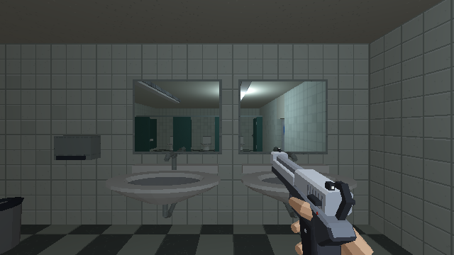
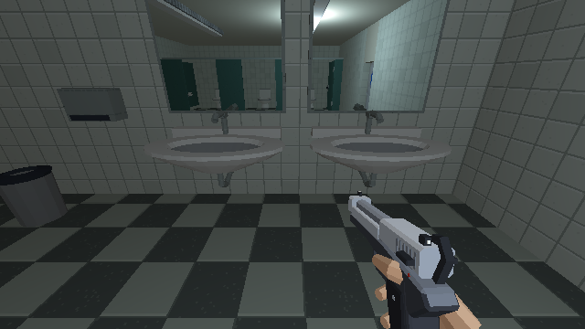
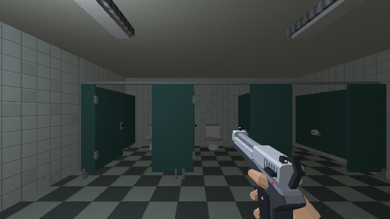
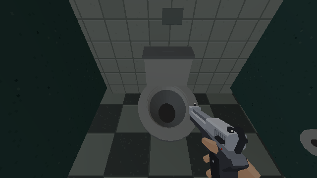
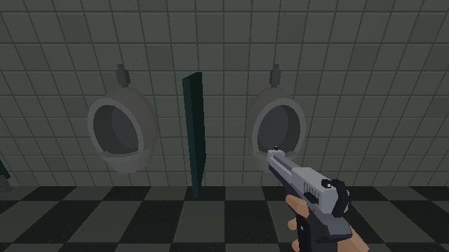

PROJET CASSANDRE · HARMONISATION · ÉQUIPEMENTS
Sanitaires
Trois grandes cabines accessibles, portes ouvrables avec E, vasques creusées et vrais reflets dans les miroirs.
Étalon approuvé · Charte commune · Compte rendu de cette passe · Cafétéria
Chargement du magasin…
Les ennemis sont neutralisés pour comparer les surfaces. Clique dans le jeu pour parcourir les lieux ; Échap libère la souris.
Pose et équipement
En attente…
Équipements en jeu

Vasques et siphons

Cabines accessibles


Urinoirs
